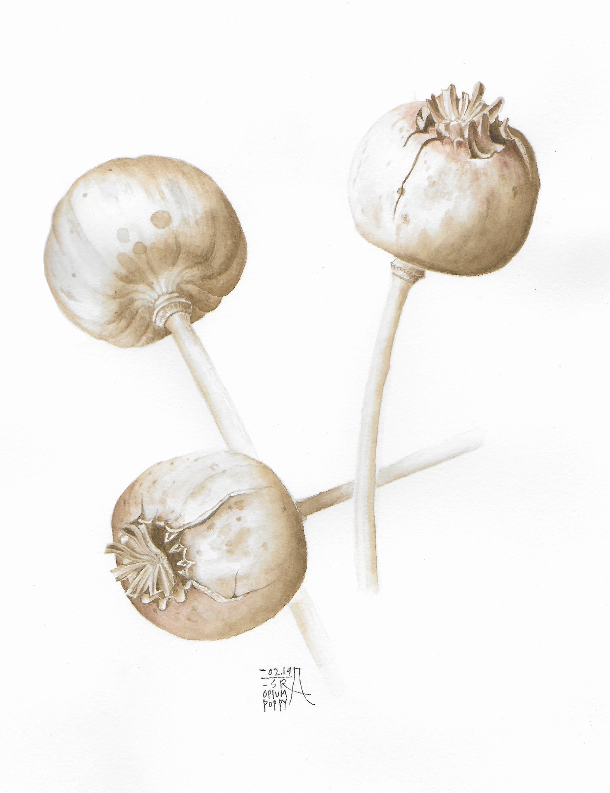
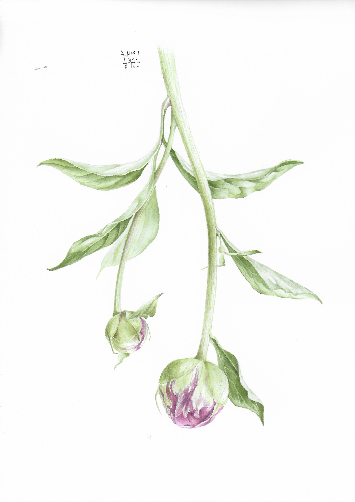
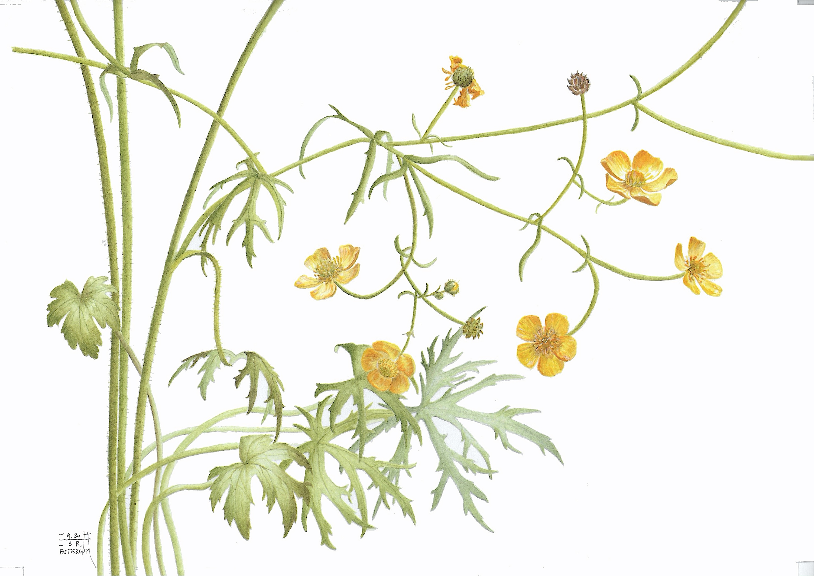

art
teachingEsra Ozgun is an Ottawa-based botanical artist and instructor teaching watercolour techniques for botanical illustration. She offers beginner and intermediate classes, including courses at the Ottawa School of Art. Explore the beauty of plants through mindful observation and hands-on painting in welcoming in-person workshops.

“For there is not a single human being, who is so conveniently simple that his being can be explained as the sum of two or three principal elements; and to explain so complex a man as Harry by the artless division into wolf and man is a hopelessly childish attempt. Harry consists of a hundred or a thousand selves, not of two. His life oscillates, as everyone’s does, not merely between two poles, such as the body and the spirit, the saint and the sinner, but between thousand and thousands.” — Hermann Hesse, Steppenwolf